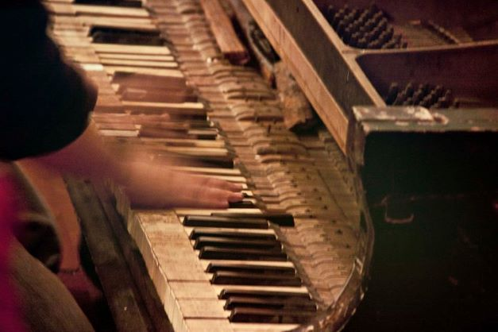

About

English
Composer and improviser born in Bogotá, Colombia in 1984. He developed his composition studies with Rodolfo Acosta in Bogotá and with Marco Stroppa in Stuttgart. Further courses, tutorships and individual classes have been carried out in Colombia, Argentina, Germany, Spain and Austria under Pierluigi Billone, Chaya Czernowin, Graciela Paraskevaídis, Coriún Aharonián, Gabriela Ortiz, Dieter Ammann and Jose Manuel López López among others. In 2014 he was awarded the Schloss Wiepersdorf Scholarship for an artistic residency in Berlin. Some of his compositions received international awards such as the New Note composition competition in Croatia with the piece Verschleierte Spiegel for solo violin (2015); the Gustavo Becerra Schmidt Electronic composition competition in Chile (2013), under the category Mixed Music (instruments and electronics); the National Composition Contest for Young Composers held by the Colombian Ministry of Culture (2010); and the National Composition Contest for Students held by the Colombian Ministry of Education (2007). His music has been played in Colombia, Argentina, Mexico, Bolivia, France, Germany, Spain, Austria, Luxembourg and Slovenia. He is founder member of the CCMC (Colombian Circle of Contemporary Music) and currently works at the District University of Bogotá as an Associated Faculty Member in the field of Composition.
Spanish
Compositor nacido en Bogotá, Colombia en 1984. Estudió con Rodolfo Acosta en Bogotá y con Marco Stroppa en Stuttgart, Alemania. Ha participado en cursos, talleres y seminarios en Colombia, Argentina, Alemania, España y Austria, bajo la tutoría de diversos compositores como Pierluigi Billone, Chaya Czernowin, Graciela Paraskevaídis, Coriún Aharonián, Gabriela Ortiz, Dieter Ammann y Jose Manuel López López, entre otros. En 2014 fue seleccionado como residente de la Künstlerhaus Schloss Wiepersdorf por el Ministerio de Ciencia, Investigación y Cultura de Brandemburgo. Sus composiciones han sido estrenadas en varios países de América y Europa y han sido premiadas en diversos concursos como el Concurso de Composición de la revista Musicworks de Canada (2015), el New Note en Samobor, Croacia (2015), Gustavo Becerra Schmidt de Chile (2013), el Premio Nacional de Música en composición del Ministerio de Cultura en Colombia (2010) y el Concurso Nacional de Composición del Ministerio de Educación de Colombia (2007). En 2008 hizo parte de la creación de C L I C, grupo musical enfocado en improvisación libre y experimentación sonora. Es miembro fundador del Círculo Colombiano de Música Contemporánea (CCMC), del cual fue presidente en 2017. Actualmente se desempeña como docente en la Universidad Distrital de Bogotá.